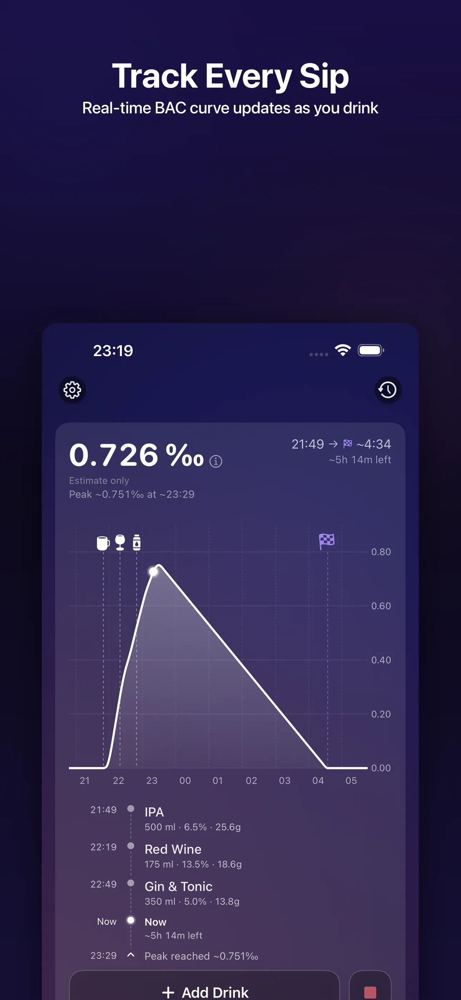
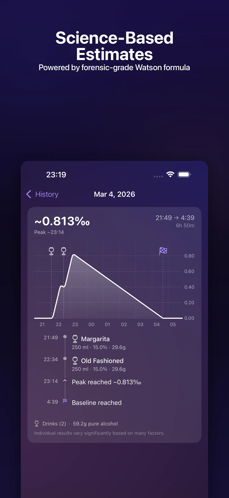
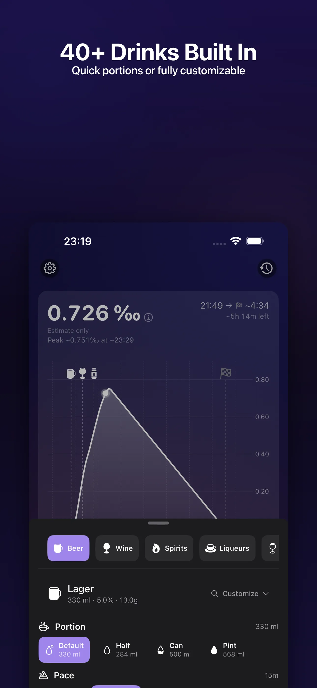
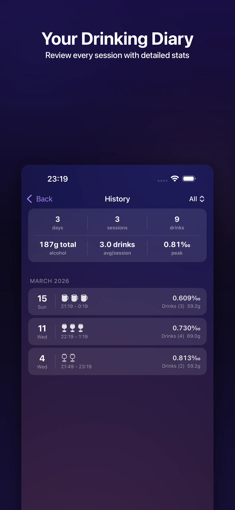

SipLogger — Free BAC Calculator & Alcohol Metabolism Tracker
Track Drinks. See Your Estimated BAC Curve. 100% Free.
Educational alcohol metabolism tracker for iPhone & iPad. No account. No ads. No data collection.
For educational & informational purposes only. Rated 17+.

Looking for a free BAC calculator that visualizes alcohol metabolism over time? SipLogger is a free educational estimated BAC tracker for iPhone and iPad. Log your drinks, and see a real-time estimated BAC curve powered by the Watson Total Body Water method and the Widmark formula. Choose from 40+ built-in drinks or create custom entries. Track your drink pace, review session history, and understand how your body processes alcohol — all with HealthKit integration for personalized calculations and Live Activities for at-a-glance monitoring. No subscription. No ads. No account. No data collection. SipLogger is a purely educational and informational tool designed to promote responsible drinking awareness. Available in 8 languages with metric and imperial support. Estimated BAC accuracy is approximately ±20%.
See the Educational BAC Calculator in Action




Educational BAC Tracking — Powerful Features
Real-Time Estimated BAC Curve
Watch your estimated blood alcohol content rise and fall in real time. The educational BAC chart shows absorption, peak, and metabolism phases as a smooth curve — helping you understand how alcohol affects your body over time.
Watson + Widmark Formulas
SipLogger uses the Watson Total Body Water method combined with the Widmark formula for scientifically-grounded estimated BAC calculations. Personalized using your weight, height, biological sex, and age. Estimated accuracy is ±20%.
40+ Built-In Drinks
Choose from a curated library of 40+ drink templates — beer, wine, spirits, cocktails, and more. Each has pre-configured volume and ABV. Create custom drinks with any volume and alcohol percentage.
Drink Pace Modeling
SipLogger models each drink's absorption timing individually. See how spacing your drinks affects your estimated BAC curve — an educational tool for understanding alcohol metabolism rates.
HealthKit Integration
Optionally read weight, height, biological sex, and age from Apple HealthKit for more accurate educational estimates. Read-only — SipLogger never writes to HealthKit and never transmits your health data.
Session History & Diary
Review past sessions with detailed drink logs, estimated peak BAC, session duration, and time to approach baseline. A personal educational diary of your drinking patterns.
Live Activities
Monitor your active session from the Lock Screen and Dynamic Island with Live Activities. See your current estimated BAC and time to approach baseline at a glance.
8 Languages
Available in English, Ukrainian, Polish, French, Spanish, German, Czech, and Italian. Full localization with metric and imperial measurement support.
How the Educational BAC Calculator Works
Set Up Your Profile
Enter your weight, height, sex, and age — or let SipLogger read them from HealthKit. These values personalize the Watson + Widmark formula.
Log Your Drinks
Pick from 40+ templates or create custom drinks. Each drink is timestamped for accurate absorption modeling in the estimated BAC calculation.
Review Your Sessions
See your estimated BAC curve, review session history, and learn how different drinking patterns affect estimated alcohol metabolism.
Why SipLogger Is Completely Free
No Subscription, No Ads
SipLogger is 100% free with no subscription, no ads, no in-app purchases, and no hidden costs. Every feature is available from day one.
Complete Privacy
No backend servers. No account required. No analytics in the app. All data stays on your device. Your drinking data is nobody's business but yours.
Educational Mission
SipLogger exists as an educational and informational tool to help people understand alcohol metabolism. Knowledge promotes responsible decision-making.
Metric & Imperial
Switch between measurement systems based on your preference — milliliters or fluid ounces, kilograms or pounds.
Frequently Asked Questions
Is SipLogger really free?
Yes, SipLogger is 100% free with no subscription fees, no ads, and no in-app purchases. It is an educational tool for understanding alcohol metabolism. All features are available immediately with no restrictions.
How does the estimated BAC calculation work?
SipLogger uses the Watson Total Body Water (TBW) method combined with the Widmark formula to estimate blood alcohol content. The calculation considers your weight, height, biological sex, and age to model how alcohol is absorbed and metabolized over time. Results are educational estimates with approximately ±20% accuracy.
How accurate is the estimated BAC?
The estimated BAC has approximately ±20% accuracy. Individual metabolism varies based on many factors including food intake, hydration, medications, liver health, and genetics. SipLogger is for educational and informational purposes only — never use estimated BAC to make decisions about driving or operating machinery.
Does SipLogger tell me when I can drive?
No. SipLogger is an educational tool and never provides driving advice. The app shows when your estimated BAC approaches baseline levels, but this should never be used to determine fitness to drive. Always use a certified breathalyzer or wait a safe amount of time. When in doubt, use a taxi or rideshare.
Is my data private?
Yes, SipLogger has no backend servers, requires no account, and collects no data. All your drink logs and session history stay entirely on your device. HealthKit data is read-only and never leaves your device. The app contains no analytics, no tracking, and no third-party SDKs.
What HealthKit data does SipLogger use?
SipLogger optionally reads weight, height, biological sex, and date of birth from HealthKit to improve estimated BAC accuracy. This data is only used locally for calculations — it is never transmitted, stored externally, or shared. SipLogger never writes data to HealthKit.
How many drinks are in the built-in database?
SipLogger includes 40+ built-in drink templates covering beer, wine, spirits, cocktails, and more. Each template has pre-configured volume and alcohol percentage. You can also create custom drinks with any volume and ABV percentage.
What is the Widmark formula?
The Widmark formula is a well-established pharmacokinetic model for estimating blood alcohol content. It calculates estimated BAC based on the amount of alcohol consumed, body weight, a gender-specific distribution ratio, and time elapsed. SipLogger enhances this with the Watson Total Body Water method for improved body water estimation, making it a reliable educational tool.
Does SipLogger work on iPad?
Yes, SipLogger is a universal app that works on both iPhone and iPad. The interface adapts to larger screens for a comfortable experience on iPad.
What is the age rating for SipLogger?
SipLogger is rated 17+ on the App Store. The app is intended for adults of legal drinking age. It is an educational and informational tool — it does not encourage or promote alcohol consumption.
Your Privacy Is Absolute
No account required. No backend servers. No analytics. No data collection. All your drink logs and session data stay on your device. HealthKit data is read-only and never transmitted. SipLogger is a completely private, educational tool.